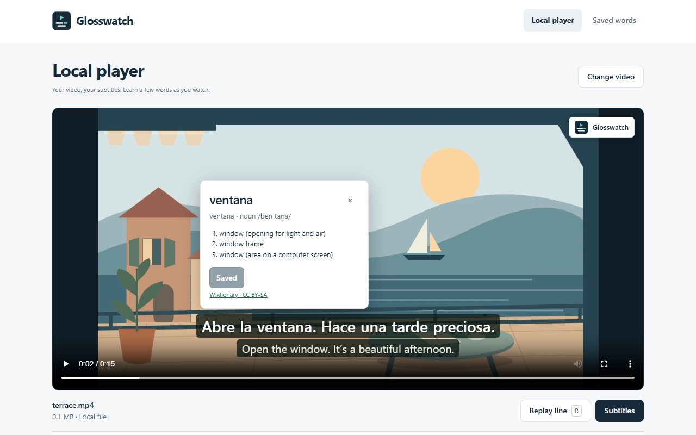

Subtitles. With meaning.
Add your own subtitles to a video. Look up a word without leaving the scene, then save it with the line you heard.
Chrome and Firefox · Spanish, French, German, Italian and Portuguese · No account or uploads
The Web Store listing is being prepared. Source installation is available now.

Try the local demo
Save these three files. Open the video in Glosswatch’s local player, add the Spanish subtitles, and choose the English file as the translation track.
Support
Made by youssof20. For help, bug reports or privacy questions, email chuumberry@gmail.com.